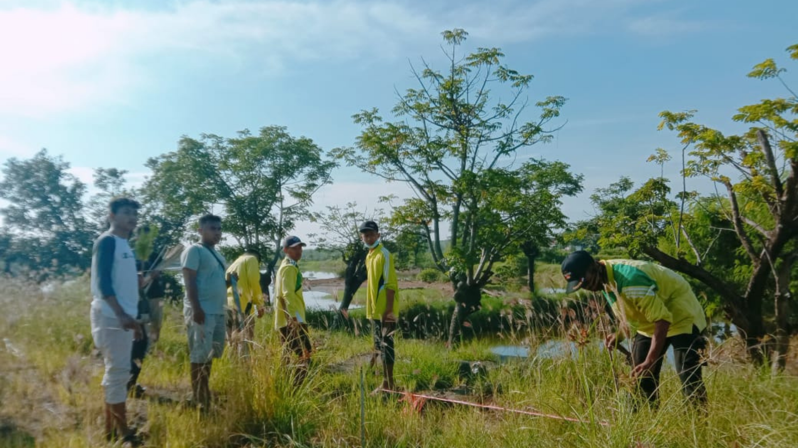
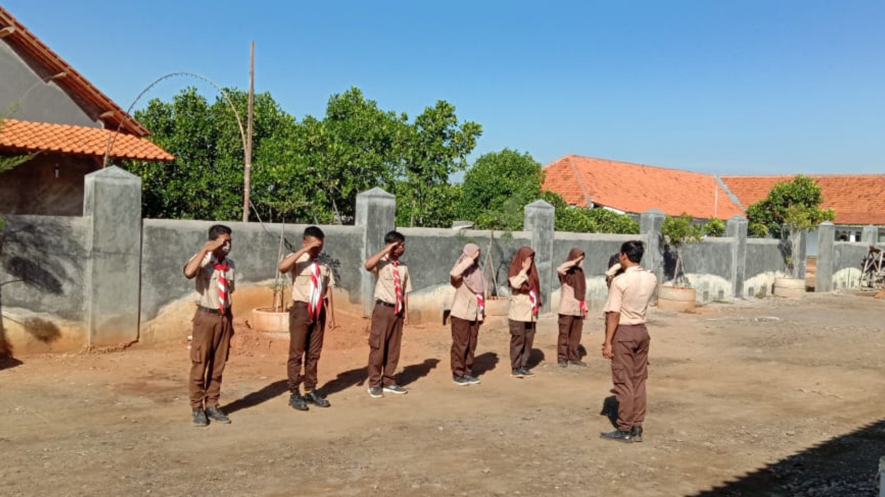
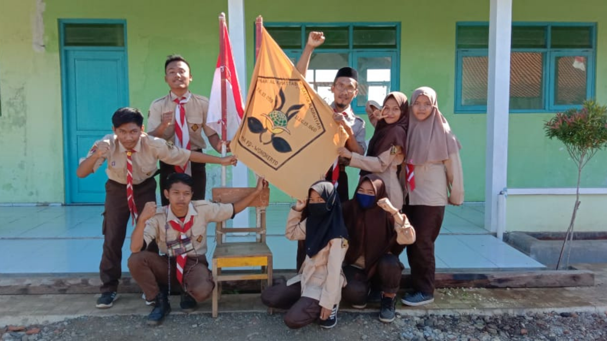
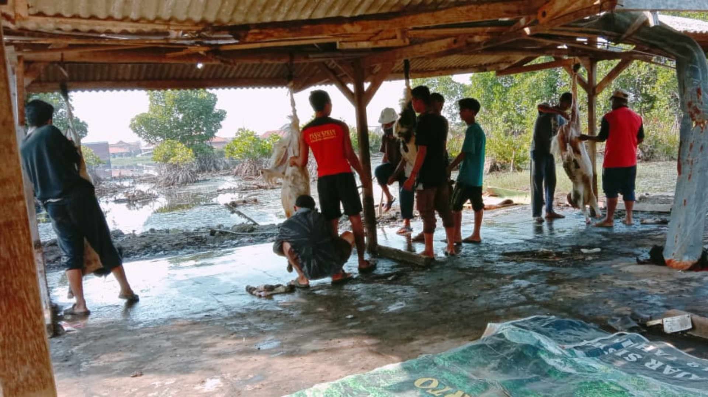
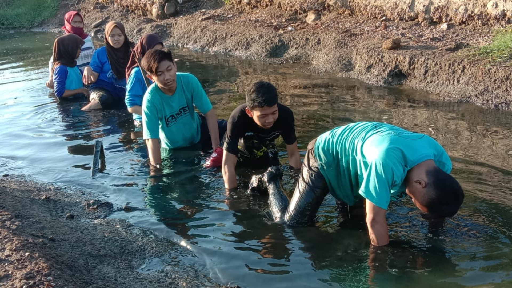
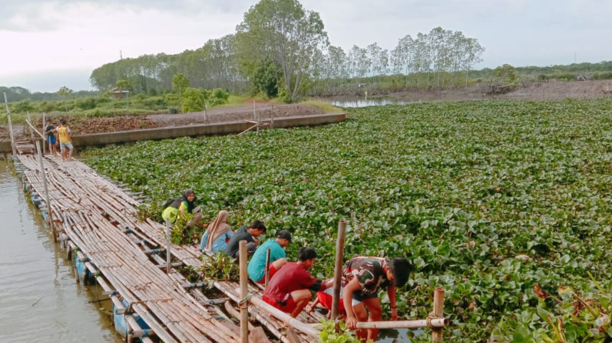

Home
Tentang
Lokasi
Galeri
MA FQ Wonokerto
Cerdas | Berprestasi | Berkarakter
Tentang
Madrasah Aliyah Fatkhul Qowim Wonokerto merupakan sekolah MA Swasta yang terletak di daerah Api-api, Wonokerto, Pekalongan, Jawa Tengah.
Kami menyediakan pendidikan formal berkualitas disertai dengan asrama yang nyaman untuk siswa.
Lokasi
Madrasah Aliyah Fatkhul Qowim Wonokerto merupakan sekolah MA Swasta yang terletak di daerah Api-api, Wonokerto, Pekalongan, Jawa Tengah.
Galeri

Peduli Lingkungan

Pengambilan Badge

Extra Pramuka

Kegiatan Qurban

Outbound Pengambilan Badge

Membersihkan Eceng Gondok
Previous
Next